1.6 Pumps¶
Purpose¶
This is the last of the python native sections to illustrate hown pumps are managed in our solver. After this is done, we will focus on EPANET as the computation engine, but have our homebrew framework to examine from an algorithmic aspect if necessary.
Herein we will simply add a few bits of code to the simulator, modify the input file structure then will have a homebrew tool that mimics most features of professional hydraulics software (except the error checking). As before we will start with an example, beat our code to solve the example, then generailze.
We will name the module pipenet-pumps.py
But first some background
Background¶
Water moves from higher to lower energy
Path of least resistance
Head is energy per unit weight of a fluid
Pumps are used to add energy to move water to a higher elevation, or over a barrier, or to increase system pressure.
A pump is a mechanical device that transfers energy into a liquid; used to
Lift from lower to higher elevation (Lift stations)
Increase pressure (Booster stations)

The gas phase equivalent is a Compressor
Pumps range substantially in size depending on application
Small
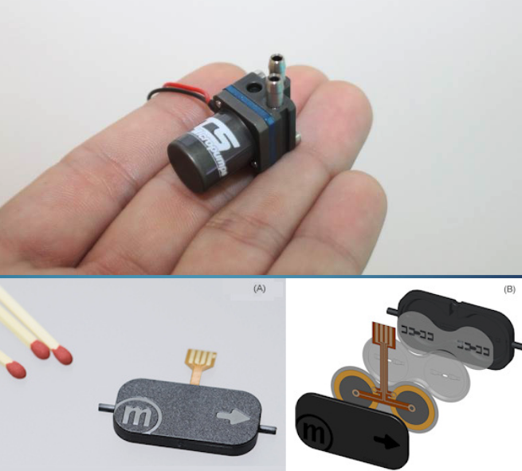Big
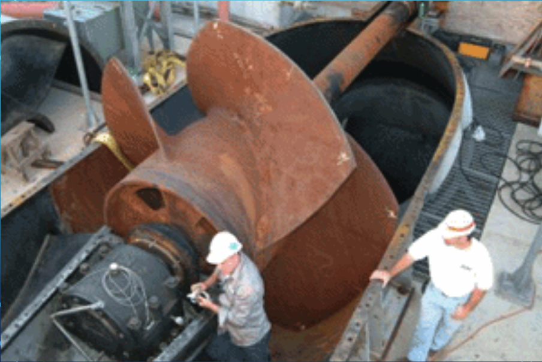
Types¶
Positive (Fixed) Displacement Pumps¶
Fixed volume of fluid is displaced each cycle regardless of system static head/pressure
Lower flow rates and higher head than non-positive pumps
Variable Displacement Pumps¶
Varying volume of fluid is displaced dependent on system static head/pressure (back pressure)
Examples of Fixed Displacement Pumps¶
Screw Pumps
Progressive Cavity Pumps
Reciprocating Pumps
Images of Positive Displacement Pumps¶
Screw Pumps 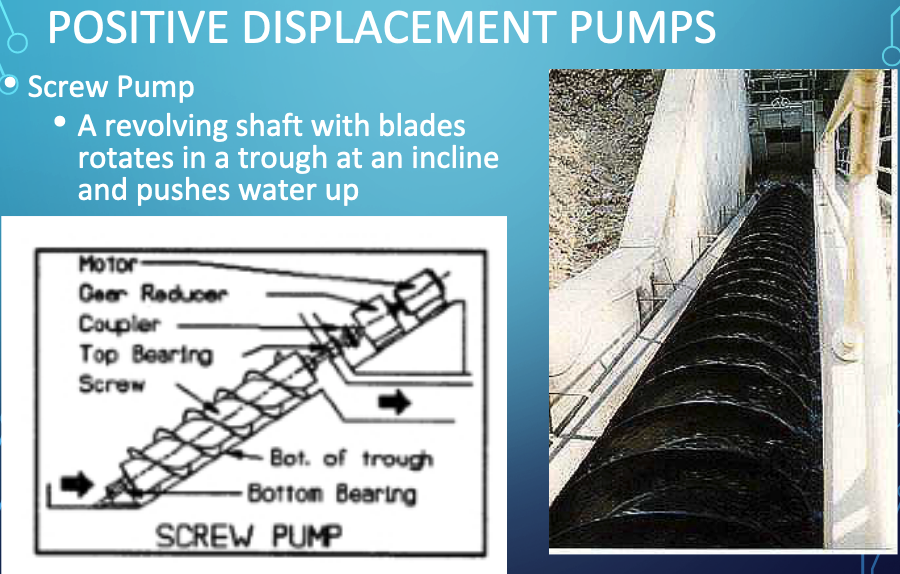
Progressive Cavity Pumps

Reciprocating Pumps

Examples of Variable Displacement Pumps¶
Centrifugal (Radial-Flow) Pumps
Propeller Pumps (Axial-Flow)
Jet Pumps (Mixed-Flow)
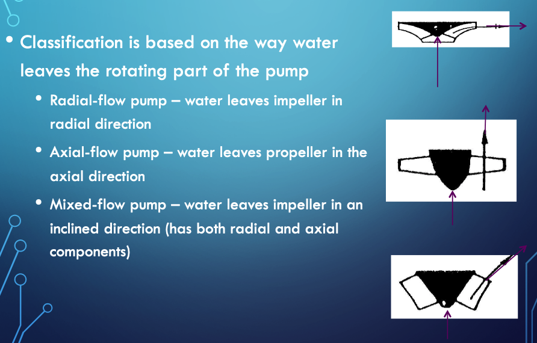
Images of Variable Displacement Pumps¶
Centrifugal (Radial-Flow) Pumps

Propeller Pumps (Axial-Flow) 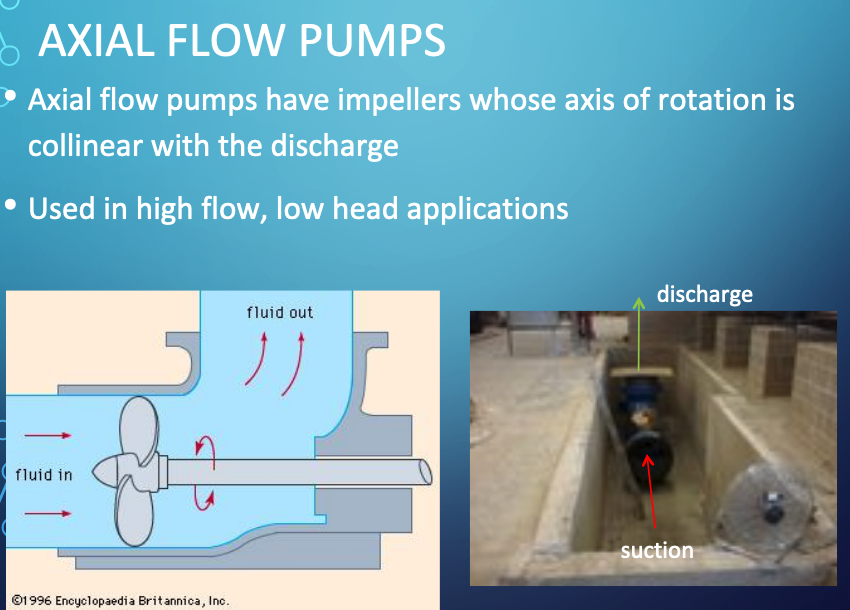
Note
A couple of explainatory videos are listed below.
Pump Selection¶
A primary design activity is selecting or sizing a pump for a specific application. The protocol is:
Design conditions are specified by system hydraulics (i.e. energy equation at desired flow rate)
Pump is selected from manufacturer catalogs that appears to meet nominal conditions
A hydraulic system curve (Head vs Discharge) is prepared
The system curve (or equation) is plotted onto the pump curve (manufacturer supplied)
The matching point where the two curves intersect is the anticipated operating point
A few secondary checks are:
Is there some head range remaining?
Flow range remaining?
Is pump efficiency close to optimal for the particular pump?
Is Net Positive Suction Head Available (NPSHa) large enough for the particular pump at the operating point (and start-up)?
System Curve¶
A system (characteristic) curve is a plot of required head versus flow rate in a hydraulic system.
The curve depicts how much energy is needed to maintain a steady flow under the supplied conditions.
The curve is constructed at the pump location and relates the required added head (at a particular flowrate) needed to be supplied by some pump.
For example if the system schematic is
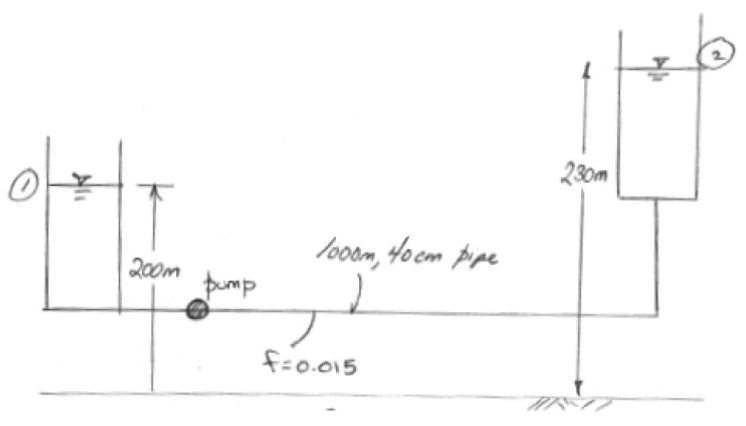
An equation of required head and discharge is
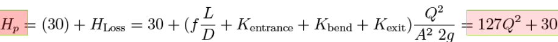
The equation tells us that the added head has to be at least 30 meters just to keep the reservoirs at the two levels shown, if any flow is to occur the pump must supply more than 30 meters of head at a prescribed flow rate. The zero flow head value is called the shutoff head. The equation plots as the figure below

Pump Curve(s)¶
Pump curves are supplied by the manufacturer and convey performance of a specific pump. Information ususally includes:
Discharge (Q) on the x-axis
Head (\(H_p\)) on the left y-axis
Pump power input on the right y-axis
Pump efficiency (wire-to-water) as a percentage
The speed of the pump (RPM)
The required Net Positive Suction Head (\(NPSH_r\))
An example pump curve is shown below¶
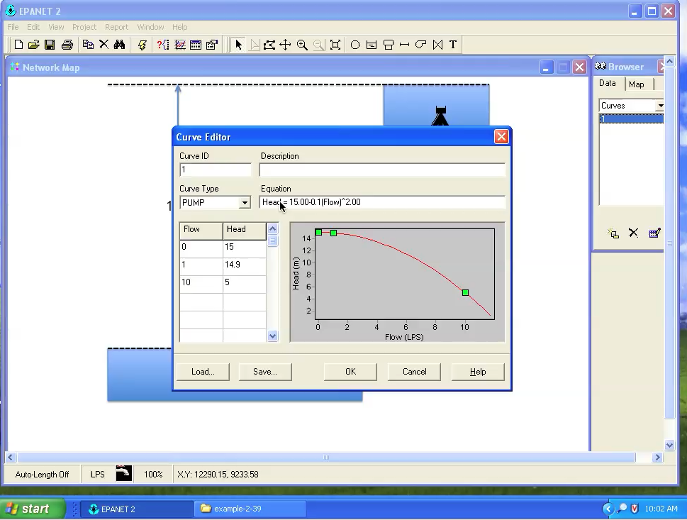
Another example curve for a different pump¶
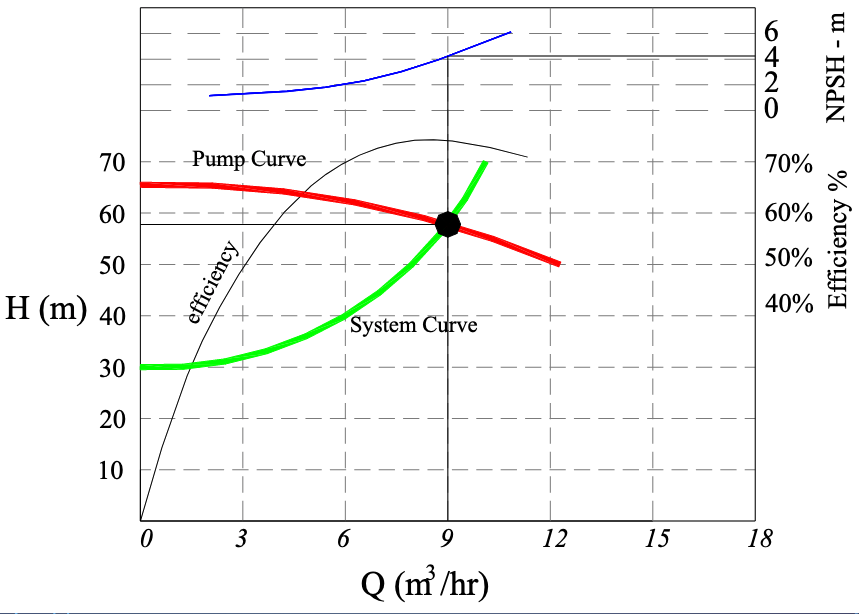
Comparing Different Pumps¶
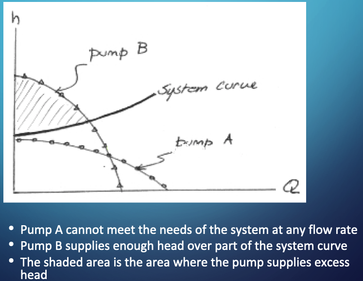
Multiple Pumps¶
Various multi-pump combinations can be employed to meet hydraulic needs - a lot of flexibility can be achieved with a few pumps and ingenious plumbing.
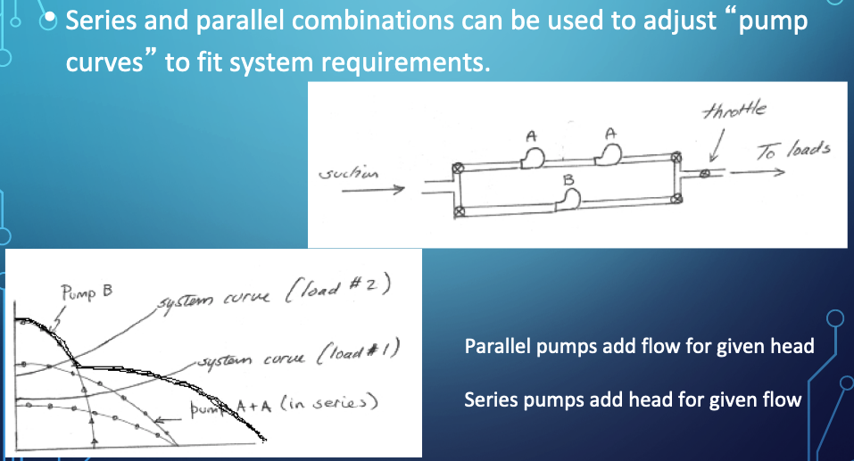


Suction Requirements¶
The most common cause of pumping system failure is poor suction conditions.
Cavitation occurs when liquid pressure is reduced to the vapor pressure of the liquid, then the liquid flashes to make small gas bubbles, which are unstable and collapse back into liquid - this rapid localized phase change process imparts large destructive energy into the pump impeller and housing and quickly destroys the pump itself in addition to creating loss of priming.
In a pipe system with a pump, cavitation will occur when the absolute pressure at the inlet (eye) falls below the vapor pressure of the water.
Note
The pump destruction described is not usually instant, but does happen pretty fast. For example weeks to failure when the designer expects years between overhauls.
High speed turbopumps can fail in seconds when they are supposed to run for minutes. Cavitation is a big deal in things like rocket ships, nuclear power plants (cooling system), and other high-risk applications; less so in Civil Engineering, usually our failures just cost time and money - a lift station failure during a flood could cause death, so we are not risk-free
Considerations
Liquid must enter the pump eye under some pressure; this pressure is dictated by the hydraulic system and is called the Available Net Positive Suction Head \(NPSH_a\).
A centrifugal pump cannot lift water unless it is primed; the first stage impellers must be below the static HGL in the suction pit at startup.
The manufacturer supplies a value for the minimum pressure the pump needs to operate; this pressure is called the Required Net Positive Suction Head \(NPSH_r\)
Proper pump operation without cavitation demands that $\( NPSH_r < NPSH_a \)$
Can calculate \(NPSH_a\) from
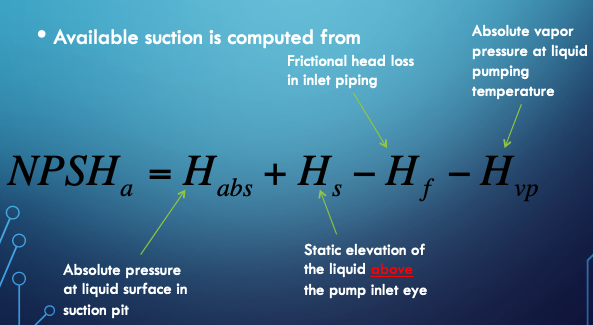
An on-line calculator is located at http://54.243.252.9/toolbox/pipehydraulics/NPSHCalculatorUS/NPSHCalculatorUS.html ; the calculator is specific for US Customary Units, but would easily be adaptabe for SI units. The interface looks like
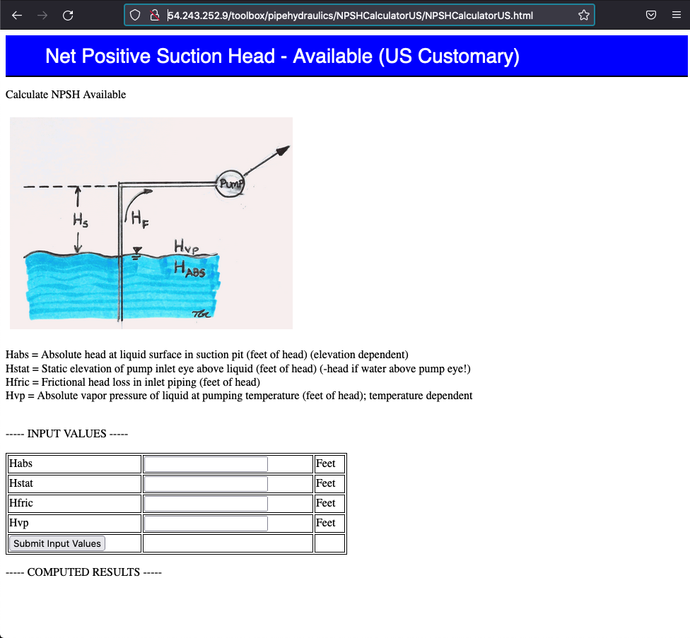
That’s our quick overview of pumps as relevant for water systems. Key points are:
Need a system curve (we can get it out of EPANET for complicated layouts)
Need some pump curves (internet, vendor websites)
Find operating point
Judge if there is some excess head and/or flow available (this would be desirable)
Judge if close to best possible efficiency for the pump (can vary a little, but it would be dumb to operate a piss-po efficiency)
Check suction conditions at startup and operation
If all good, then have a pump
Remember can run multiple pumps if a single pump is not available (really big pumps can be custom built, but we usually want to use off-the-shelf pumps)
Now lets add these concepts into our network script
Example 4¶
Build a script that includes a pump that supplies the network at the upper left corner and determine the flow distribution in Fig. 15.
{kind=link}
Fig. 15 is a pipe network for with supply and demands identified. Pipe lengths (in feet) and diameters (in feet) are also depicted. The supply to the upper left corner node is through a pump with the following characteristic curve
The pump supplies from a reservoir with a pool elevation (total head in reservoir) of 0.0 feet. The elevation of each node is 200 feet.
Our simulator only requires a few subtle changes; link 11 is the pump that joins the specified grade node (the reservoir) into the network at node 1, node 8 controls the system as it is the only demand in this example.
#input file generator
data = """1
8
11
200 200 200 200 200 200 200 200
1.0 1.0 1.0 1.0 1.0 1.0 1.0 1.0 1.0 1.0 1.0
300 300 150 150 300 150 300 150 300 300 30
0.00001 0.00001 0.00001 0.00001 0.00001 0.00001 0.00001 0.00001 0.00001 0.00001 0.00001
0.000011
1 1 1 1 1 1 1 1 1 1 1
-1 0 -1 0 0 0 0 0 0 0 1
1 -1 0 -1 0 0 0 0 0 0 0
0 1 0 0 -1 0 0 0 0 0 0
0 0 1 0 0 -1 -1 0 0 0 0
0 0 0 1 0 0 1 -1 0 0 0
0 0 0 0 0 1 0 0 -1 0 0
0 0 0 0 0 0 0 1 1 -1 0
0 0 0 0 1 0 0 0 0 1 0
0 0 0 0 0 0 0 10 0 0 0 0 0 0 0 0 0 0 0
11 418.11 0.25 1.86"""
with open("L16-E1.txt", "w") as file:
file.write(data)
file.close()
Now will modify the module, first run it with an older file, with zero pumps
# A simple script to generate L15-E3.txt with zero pump row
data = """0
6
8
170.0 180.0 165.0 155.0 150.0 145.0
0.83 0.83 1.00 2.00 0.83 1.50 0.83 1.00
4000 6000 6000 6000 7000 3000 5000 300.0
0.00001 0.00001 0.00001 0.00001 0.00001 0.00001 0.00001 0.00001
0.000011
1 1 1 1 1 1 1 1 1 1 1 1
1 0 -1 0 0 0 0 0
-1 -1 0 -1 0 0 0 1
0 1 0 0 -1 0 0 0
0 0 1 0 0 -1 0 0
0 0 0 1 0 1 1 0
0 0 0 0 1 0 -1 0
1.114 1.114 1.114 3.347 2.228 3.347 0 0 0 0 0 0 0 -315"""
with open("L15-E3.txt", "w") as file:
file.write(data)
file.close()
# Now import the simulation module
import pipenet_pumps
# Now run the simulation
pipenet_pumps.pipenet_pumps('L15-E3.txt','false')
####ECHO INPUT################
Input File: L15-E3.txt
number of pumps : 0
number of nodes : 6
number of pipes : 8
viscosity : 1.1e-05
-----------------------------
node id: 0 , elevation : 170.0 head : 0.0
node id: 1 , elevation : 180.0 head : 0.0
node id: 2 , elevation : 165.0 head : 0.0
node id: 3 , elevation : 155.0 head : 0.0
node id: 4 , elevation : 150.0 head : 0.0
node id: 5 , elevation : 145.0 head : -315.0
-----------------------------
pipe id: 0 , diameter : 0.83 , distance : 4000.0 , roughness : 1e-05 , flow : 1.0
pipe id: 1 , diameter : 0.83 , distance : 6000.0 , roughness : 1e-05 , flow : 1.0
pipe id: 2 , diameter : 1.0 , distance : 6000.0 , roughness : 1e-05 , flow : 1.0
pipe id: 3 , diameter : 2.0 , distance : 6000.0 , roughness : 1e-05 , flow : 1.0
pipe id: 4 , diameter : 0.83 , distance : 7000.0 , roughness : 1e-05 , flow : 1.0
pipe id: 5 , diameter : 1.5 , distance : 3000.0 , roughness : 1e-05 , flow : 1.0
pipe id: 6 , diameter : 0.83 , distance : 5000.0 , roughness : 1e-05 , flow : 1.0
pipe id: 7 , diameter : 1.0 , distance : 300.0 , roughness : 1e-05 , flow : 1.0
-----------------------------
node-arc incidence matrix
[1.0, 0.0, -1.0, 0.0, 0.0, 0.0, 0.0, 0.0]
[-1.0, -1.0, 0.0, -1.0, 0.0, 0.0, 0.0, 1.0]
[0.0, 1.0, 0.0, 0.0, -1.0, 0.0, 0.0, 0.0]
[0.0, 0.0, 1.0, 0.0, 0.0, -1.0, 0.0, 0.0]
[0.0, 0.0, 0.0, 1.0, 0.0, 1.0, 1.0, 0.0]
[0.0, 0.0, 0.0, 0.0, 1.0, 0.0, -1.0, 0.0]
-----------------------------
###EXIT TYPE###
Update not changing --exit and report current update
iteration 13
#####SIMULATION RESULTS#####
Results at iteration = : 13
number of nodes : 6
number of pipes : 8
viscosity : 1.1e-05
-----------------------------
node id: 1 , elevation (feet) : 170.0 head (feet) : 296.63 pressure (psi) : 56.6
node id: 2 , elevation (feet) : 180.0 head (feet) : 302.21 pressure (psi) : 54.63
node id: 3 , elevation (feet) : 165.0 head (feet) : 278.57 pressure (psi) : 50.76
node id: 4 , elevation (feet) : 155.0 head (feet) : 296.62 pressure (psi) : 63.3
node id: 5 , elevation (feet) : 150.0 head (feet) : 298.24 pressure (psi) : 66.26
node id: 6 , elevation (feet) : 145.0 head (feet) : 271.87 pressure (psi) : 56.71
-----------------------------
pipe id: 1 , diameter (feet) : 0.83 , distance (feet) : 4000.0 , friction factor : 0.016 , flow (cfs) : 1.16
pipe id: 2 , diameter (feet) : 0.83 , distance (feet) : 6000.0 , friction factor : 0.015 , flow (cfs) : 2.05
pipe id: 3 , diameter (feet) : 1.0 , distance (feet) : 6000.0 , friction factor : 0.038 , flow (cfs) : 0.04
pipe id: 4 , diameter (feet) : 2.0 , distance (feet) : 6000.0 , friction factor : 0.013 , flow (cfs) : 7.94
pipe id: 5 , diameter (feet) : 0.83 , distance (feet) : 7000.0 , friction factor : 0.017 , flow (cfs) : 0.94
pipe id: 6 , diameter (feet) : 1.5 , distance (feet) : 3000.0 , friction factor : 0.015 , flow (cfs) : -3.3
pipe id: 7 , diameter (feet) : 0.83 , distance (feet) : 5000.0 , friction factor : 0.014 , flow (cfs) : -2.41
pipe id: 8 , diameter (feet) : 1.0 , distance (feet) : 300.0 , friction factor : 0.011 , flow (cfs) : 12.26
-----------------------------
Here we identify the changes in the script to make the simulation package. The requesite modifications are shown below. The remainder of the script is unchanged. Notice that we now need to include pump count in the input file, and the pump curve for each pump. The pumps will replace a link in the network, and the naming scheme is same as a pipe same connections.
Modify the Entry Point Name
def pipenet_pumps(infilename,verbose): # pass input file name as a parameter,pass verbose flag as string
# hydraulic elements prototype functions
# Jain Friction Factor Function -- Tested OK 23SEP16
import math # This will import math module
.
.
.
Add a pump curve function
.
.
.
# Pump Curve factor function
def p_factor(shutoff,constant,exponent,flow):
p_factor = (shutoff/abs(flow)) - constant*abs(flow**(exponent-1))
return(p_factor)
# SolveLinearSystem.py
.
.
.
Allocate memory for pumps
.
.
.
rhs_true = [] # null list for nodal demands
pumps = [] # null list for pumps
tempvect = [] # null list for reading from external file, then recasting into one of the above lists
.
.
.
Read in pump information
.
.
.
npumps = int(afile.readline())
nnodes = int(afile.readline())
npipes = int(afile.readline())
# read elevation vector
.
.
.
# read demands and heads at FGNs (i.e. the rhs)
tempvect.append([float(n) for n in afile.readline().strip().split()])
for i in range(0,nnodes+npipes,1):
rhs_true.append(float(tempvect[0][i]))
tempvect = [] # reset vector
# read the pumps list
for irow in range(0,npumps,1): # then read each row
pumps.append([float(n) for n in afile.readline().strip().split()])
#print(pumps)
.
.
.
Echo the pump inputs
.
.
.
print ("-----------------------------")
for irow in range(0,npumps):
print('link ID:',pumps[irow][0],', shutoff head: ',pumps[irow][1],', constant: ',pumps[irow][2],', exponent: ',pumps[irow][3])
.
.
.
Build the pump factor array for unit flow in the pump
This is done in the outer iteration loop
for iteration in range(howmany): # iteration outer loop
.
.
.
for i in range(0,npumps):
addedhead[i]=p_factor(pumps[i][1],pumps[i][2],pumps[i][3],flowguess[int(pumps[i][0]-1)])
.
.
.
Modify the Energy Equations part of the matrix
.
.
.
# build lower left partition of the matrix
istart = nnodes
iend = nnodes+npipes
jstart = 0
jend = npipes
for i in range(istart,iend ):
for j in range(jstart,jend ):
# print('i =',i,'j=',j)
if (i-istart) == j :
# print('i =',i,'j=',j)
augmentedMat[i][j] = -1.0*lossfactor[j] + 0.0
if (npumps > 0) :
for ipump in range(0,npumps):
if(j == (pumps[ipump][0]-1) ):
augmentedMat[i][j] = addedhead[ipump]
.
.
.
Modify result report
# Report Results
print("#####SIMULATION RESULTS#####\nResults at iteration = :",iteration)
.
.
.
for irow in range(0,npumps):
print('link ID:',pumps[irow][0],', shutoff head: ',pumps[irow][1],', constant: ',pumps[irow][2],', exponent: ',pumps[irow][3],' added head:',addedhead[irow]*flowguess[int(pumps[irow][0]-1)])
.
.
.
# Now import the module
import pipenet_pumps
# Now run the simulation
pipenet_pumps.pipenet_pumps('L16-E1.txt','false')
####ECHO INPUT################
Input File: L16-E1.txt
number of pumps : 1
number of nodes : 8
number of pipes : 11
viscosity : 1.1e-05
-----------------------------
node id: 0 , elevation : 200.0 head : 0.0
node id: 1 , elevation : 200.0 head : 0.0
node id: 2 , elevation : 200.0 head : 0.0
node id: 3 , elevation : 200.0 head : 0.0
node id: 4 , elevation : 200.0 head : 0.0
node id: 5 , elevation : 200.0 head : 0.0
node id: 6 , elevation : 200.0 head : 0.0
node id: 7 , elevation : 200.0 head : 0.0
-----------------------------
pipe id: 0 , diameter : 1.0 , distance : 300.0 , roughness : 1e-05 , flow : 1.0
pipe id: 1 , diameter : 1.0 , distance : 300.0 , roughness : 1e-05 , flow : 1.0
pipe id: 2 , diameter : 1.0 , distance : 150.0 , roughness : 1e-05 , flow : 1.0
pipe id: 3 , diameter : 1.0 , distance : 150.0 , roughness : 1e-05 , flow : 1.0
pipe id: 4 , diameter : 1.0 , distance : 300.0 , roughness : 1e-05 , flow : 1.0
pipe id: 5 , diameter : 1.0 , distance : 150.0 , roughness : 1e-05 , flow : 1.0
pipe id: 6 , diameter : 1.0 , distance : 300.0 , roughness : 1e-05 , flow : 1.0
pipe id: 7 , diameter : 1.0 , distance : 150.0 , roughness : 1e-05 , flow : 1.0
pipe id: 8 , diameter : 1.0 , distance : 300.0 , roughness : 1e-05 , flow : 1.0
pipe id: 9 , diameter : 1.0 , distance : 300.0 , roughness : 1e-05 , flow : 1.0
pipe id: 10 , diameter : 1.0 , distance : 30.0 , roughness : 1e-05 , flow : 1.0
-----------------------------
node-arc incidence matrix
[-1.0, 0.0, -1.0, 0.0, 0.0, 0.0, 0.0, 0.0, 0.0, 0.0, 1.0]
[1.0, -1.0, 0.0, -1.0, 0.0, 0.0, 0.0, 0.0, 0.0, 0.0, 0.0]
[0.0, 1.0, 0.0, 0.0, -1.0, 0.0, 0.0, 0.0, 0.0, 0.0, 0.0]
[0.0, 0.0, 1.0, 0.0, 0.0, -1.0, -1.0, 0.0, 0.0, 0.0, 0.0]
[0.0, 0.0, 0.0, 1.0, 0.0, 0.0, 1.0, -1.0, 0.0, 0.0, 0.0]
[0.0, 0.0, 0.0, 0.0, 0.0, 1.0, 0.0, 0.0, -1.0, 0.0, 0.0]
[0.0, 0.0, 0.0, 0.0, 0.0, 0.0, 0.0, 1.0, 1.0, -1.0, 0.0]
[0.0, 0.0, 0.0, 0.0, 1.0, 0.0, 0.0, 0.0, 0.0, 1.0, 0.0]
-----------------------------
pump id: 11.0 , shutoff head: 418.11 , constant: 0.25 , exponent: 1.86
###EXIT TYPE###
Gradient near zero --exit and report current update
iteration 12
#####SIMULATION RESULTS#####
Results at iteration = : 12
number of nodes : 8
number of pipes : 11
viscosity : 1.1e-05
-----------------------------
node id: 1 , elevation (feet) : 200.0 head (feet) : 400.0 pressure (psi) : 89.39
node id: 2 , elevation (feet) : 200.0 head (feet) : 397.87 pressure (psi) : 88.44
node id: 3 , elevation (feet) : 200.0 head (feet) : 396.06 pressure (psi) : 87.63
node id: 4 , elevation (feet) : 200.0 head (feet) : 398.61 pressure (psi) : 88.77
node id: 5 , elevation (feet) : 200.0 head (feet) : 397.86 pressure (psi) : 88.44
node id: 6 , elevation (feet) : 200.0 head (feet) : 398.2 pressure (psi) : 88.59
node id: 7 , elevation (feet) : 200.0 head (feet) : 397.38 pressure (psi) : 88.22
node id: 8 , elevation (feet) : 200.0 head (feet) : 394.24 pressure (psi) : 86.82
-----------------------------
pipe id: 1 , diameter (feet) : 1.0 , distance (feet) : 300.0 , friction factor : 0.013 , flow (cfs) : 4.64
pipe id: 2 , diameter (feet) : 1.0 , distance (feet) : 300.0 , friction factor : 0.013 , flow (cfs) : 4.26
pipe id: 3 , diameter (feet) : 1.0 , distance (feet) : 150.0 , friction factor : 0.013 , flow (cfs) : 5.36
pipe id: 4 , diameter (feet) : 1.0 , distance (feet) : 150.0 , friction factor : 0.021 , flow (cfs) : 0.38
pipe id: 5 , diameter (feet) : 1.0 , distance (feet) : 300.0 , friction factor : 0.013 , flow (cfs) : 4.26
pipe id: 6 , diameter (feet) : 1.0 , distance (feet) : 150.0 , friction factor : 0.014 , flow (cfs) : 2.75
pipe id: 7 , diameter (feet) : 1.0 , distance (feet) : 300.0 , friction factor : 0.014 , flow (cfs) : 2.62
pipe id: 8 , diameter (feet) : 1.0 , distance (feet) : 150.0 , friction factor : 0.014 , flow (cfs) : 2.99
pipe id: 9 , diameter (feet) : 1.0 , distance (feet) : 300.0 , friction factor : 0.014 , flow (cfs) : 2.75
pipe id: 10 , diameter (feet) : 1.0 , distance (feet) : 300.0 , friction factor : 0.013 , flow (cfs) : 5.74
pipe id: 11 , diameter (feet) : 1.0 , distance (feet) : 30.0 , friction factor : 0.012 , flow (cfs) : 10.0
-----------------------------
pump id: 11.0 , shutoff head: 418.11 , constant: 0.25 , exponent: 1.86 added head: 400.0
Now that we have addressed pumps, we have a rudimentary tool that can help solve steady pipeline network problems. The full source warts and all is listed below.
Note
The script still needs some fixes, because pumps are used to overwrite links, information for both are provided; hence there are duplicate entries in the pipes array - its easier for homebrew to accept this structure, professional code would build in logic toidentify the overwrite and at least supress it from the output. This is as far with this script as we go, and will use it for a few examples and compare to EPANET results to convince ourselves we have reverse-engineered EPANET (and hence have a good working understanding of whats going on in the program), then will explore the EPANET toolbox as a replacement for pipenet-pumps to programmatically access EPANET.
pipenet_pumps.py module source¶
def pipenet_pumps(infilename,verbose): # pass input file name as a parameter,pass verbose flag as string
# hydraulic elements prototype functions
# Jain Friction Factor Function -- Tested OK 23SEP16
import math # This will import math module
def friction_factor(roughness,diameter,reynolds):
temp1 = roughness/(3.7*diameter)
temp2 = 5.74/(reynolds**(0.9))
temp3 = math.log10(temp1+temp2)
temp3 = temp3**2
friction_factor = 0.25/temp3
return(friction_factor)
# Velocity Function
def velocity(diameter,discharge):
velocity=discharge/(0.25*math.pi*diameter**2)
return(velocity)
# Reynolds Number Function
def reynolds_number(velocity,diameter,mu):
reynolds_number = abs(velocity)*diameter/mu
return(reynolds_number)
# Geometric factor function
def kk_factor(howlong,diameter,gravity):
kk_factor = (16*howlong)/(2.0*gravity*math.pi**2*diameter**5)
return(kk_factor)
# Pump Curve factor function
def p_factor(shutoff,constant,exponent,flow):
p_factor = (shutoff/abs(flow)) - constant*abs(flow**(exponent-1))
return(p_factor)
# SolveLinearSystem.py
# Solve Ax = b for x by Gaussian elimination with back substitution.
# Method returns solution as a list
# Method preserves A
##########
def linearsolver(A,b):
n = len(A)
# M = A #this is object to object equivalence
# copy A into M element by element - to operate on M without destroying A
M=[[0.0 for jcol in range(n)]for irow in range(n)]
for irow in range(n):
for jcol in range(n):
M[irow][jcol]=A[irow][jcol]
#
i = 0
for x in M:
x.append(b[i])
i += 1
for k in range(n):
for i in range(k,n):
if abs(M[i][k]) > abs(M[k][k]):
M[k], M[i] = M[i],M[k]
else:
pass
for j in range(k+1,n):
q = float(M[j][k]) / M[k][k]
for m in range(k, n+1):
M[j][m] -= q * M[k][m]
x = [0 for i in range(n)]
x[n-1] =float(M[n-1][n])/M[n-1][n-1]
for i in range (n-1,-1,-1):
z = 0
for j in range(i+1,n):
z = z + float(M[i][j])*x[j]
x[i] = float(M[i][n] - z)/M[i][i]
# print (x)
return(x)
#
def writeM(M,ir,jc,label):
print ("------",label,"------")
for i in range(0,ir,1):
print (M[i][0:jc])
print ("-----------------------------")
return()
def writeV(V,ir,label):
print ("------",label,"------")
for i in range(0,ir,1):
print (V[i])
print ("-----------------------------")
return()
def matrixmatrixmult(amatrix,bmatrix,rowNumA,colNumA,rowNumB,colNumB):
AB =[[0.0 for j in range(colNumB)] for i in range(rowNumA)]
for i in range(0,rowNumA):
for j in range(0,colNumB):
for k in range(0,colNumA):
AB[i][j]=AB[i][j]+amatrix[i][k]*bmatrix[k][j]
return(AB)
def matrixvectormult(amatrix,xvector,rowNumA,colNumA):
bvector=[0.0 for i in range(rowNumA)]
for i in range(0,rowNumA):
for j in range(0,1):
for k in range(0,colNumA):
bvector[i]=bvector[i]+amatrix[i][k]*xvector[k]
return(bvector)
def vectoradd(avector,bvector,length):
cvector=[]
for i in range(length):
cvector.append(avector[i]+bvector[i])
return(cvector)
def vectorsub(avector,bvector,length):
cvector=[]
for i in range(length):
cvector.append(avector[i]-bvector[i])
return(cvector)
def vdotv(avector,bvector,length):
adotb=0.0
for i in range(length):
adotb=adotb+avector[i]*bvector[i]
return(adotb)
########## Initial Memory Allocations ###############
bvector = []
rowNumA = 0
colNumA = 0
rowNumB = 0
# verbose = 'false' # set to true for in-class demonstration
#############################################
elevation = [] # null list node elevations
diameter = [] # null list pipe diameters
distance = [] # null list pipe lengths
roughness = [] # null list pipe roughness
flowguess = [] # null list pipe flow rates
nodearcs = [] # node-arc incidence matrix
rhs_true = [] # null list for nodal demands
pumps = [] # null list for pumps
tempvect = [] # null list for reading from external file, then recasting into one of the above lists
##############################################
# connect and read file for Pipeline Network #
##############################################
afile = open(infilename,"r")
npumps = int(afile.readline())
nnodes = int(afile.readline())
npipes = int(afile.readline())
# read elevation vector
tempvect.append([float(n) for n in afile.readline().strip().split()])
for i in range(0,nnodes,1):
elevation.append(float(tempvect[0][i]))
tempvect = [] # reset vector
# read diameter vector
tempvect.append([float(n) for n in afile.readline().strip().split()])
for i in range(0,npipes,1):
diameter.append(float(tempvect[0][i]))
tempvect = [] # reset vector
# read length vector
tempvect.append([float(n) for n in afile.readline().strip().split()])
for i in range(0,npipes,1):
distance.append(float(tempvect[0][i]))
tempvect = [] # reset vector
# read roughness vector
tempvect.append([float(n) for n in afile.readline().strip().split()])
for i in range(0,npipes,1):
roughness.append(float(tempvect[0][i]))
tempvect = [] # reset vector
# read viscosity (scalar)
viscosity = float(afile.readline())
# read current flow guess
tempvect.append([float(n) for n in afile.readline().strip().split()])
for i in range(0,npipes,1):
flowguess.append(float(tempvect[0][i]))
tempvect = [] # reset vector
# read nodearc incidence matrix
## future revisions read directly into augmented matrix, or find way to release nodearc from stack
for irow in range(0,nnodes,1): # then read each row
nodearcs.append([float(n) for n in afile.readline().strip().split()])
# read demands and heads at FGNs (i.e. the rhs)
tempvect.append([float(n) for n in afile.readline().strip().split()])
for i in range(0,nnodes+npipes,1):
rhs_true.append(float(tempvect[0][i]))
tempvect = [] # reset vector
# read the pumps list
for irow in range(0,npumps,1): # then read each row
pumps.append([float(n) for n in afile.readline().strip().split()])
#print(pumps)
######################################
# end file read ,disconnect file #
######################################
afile.close() # Disconnect the file
######################################
# echo the input in human readable #
######################################
print('####ECHO INPUT################\nInput File: ',infilename)
print('number of pumps : ',npumps)
print('number of nodes : ',nnodes)
print('number of pipes : ',npipes)
print('viscosity : ',viscosity)
print ("-----------------------------")
for irow in range(0,nnodes):
print('node id:',irow, ', elevation :',elevation[irow],' head :',rhs_true[irow+npipes])
print ("-----------------------------")
for jcol in range(0,npipes):
print('pipe id:',jcol,', diameter : ' ,diameter[jcol],', distance : ',distance[jcol],
', roughness : ',roughness[jcol],', flow : ',flowguess[jcol])
print ("-----------------------------")
##for jcol in range(0,nnodes+npipes):
## print('irow :',jcol,' RHS True :',rhs_true[jcol])
##print ("-----------------------------")
print("node-arc incidence matrix")
for i in range(0,nnodes,1):
print (nodearcs[i][0:npipes])
print ("-----------------------------")
for irow in range(0,npumps):
print('pump id:',pumps[irow][0],', shutoff head: ',pumps[irow][1],', constant: ',pumps[irow][2],', exponent: ',pumps[irow][3])
# create augmented matrix
colNumA = npipes+nnodes
rowNumA = nnodes+npipes
augmentedMat = [] # null list to store augmented matrix
#######################################################################################
augmentedMat = [[0.0 for j in range(colNumA)]for i in range(rowNumA)] #fill with zeroes
#build upper left partition -- from nodearcs
for ir in range(0,nnodes):
for jc in range (0,npipes):
augmentedMat[ir][jc] = nodearcs[ir][jc]
istart=nnodes
iend=nnodes+npipes
jstart=npipes
jend=npipes+nnodes
for ir in range(istart,iend):
for jc in range (jstart,jend):
augmentedMat[ir][jc] = -1.0*nodearcs[jc-jstart][ir-istart] + 0.0
if verbose == 'true' :
print("augmented matrix before loss factors")
writeM(augmentedMat,rowNumA,colNumA,"augmented matrix")
#########Simulation Constants and Additional Memory Allocation #######
howmany=50 #iterations max
tolerance1 = 1e-24
tolerance2 = 1e-24
velocity_pipe = [0 for i in range(npipes)] # null list velocities
reynolds = [0 for i in range(npipes)] # null list reynolds numbers
friction = [0 for i in range(npipes)] # null list friction
geometry = [0 for i in range(npipes)] # null list geometry
lossfactor = [0 for i in range(npipes)] # null list loss
addedhead = [0 for i in range(npumps)]
jacbMat = [] # null list to store jacobian matrix
jacbMat = [[0.0 for j in range(colNumA)]for i in range(rowNumA)] #fill with zeroes
solvecguess =[ 0.0 for i in range(rowNumA)]
solvecnew =[ 0.0 for i in range(rowNumA)]
for i in range(0,npipes,1):
solvecguess[i] = flowguess[i]
geometry[i] = kk_factor(distance[i],diameter[i],32.2)
#solvecguess is a current guess -- wonder if more pythonic way for this assignment
## print('irow :',i,' Geometry Factor :',geometry[i])
##print ("-----------------------------")
###############################################################
## ITERATION LOOP #
###############################################################
for iteration in range(howmany): # iteration outer loop
if verbose == 'true' :
print("solutions at begin of iteration",iteration)
for jcol in range(0,nnodes+npipes):
print('irow :',jcol,' solvecnew :',solvecnew[jcol]," solvecguess ",solvecguess[jcol])
print ("-----------------------------")
for i in range(0,npipes,1):
velocity_pipe[i] = velocity(diameter[i],flowguess[i])
reynolds[i]=reynolds_number(velocity_pipe[i],diameter[i],viscosity)
friction[i]=friction_factor(roughness[i],diameter[i],reynolds[i])
lossfactor[i]=friction[i]*geometry[i]*abs(flowguess[i])
for i in range(0,npumps):
addedhead[i]=p_factor(pumps[i][1],pumps[i][2],pumps[i][3],flowguess[int(pumps[i][0]-1)])
if verbose == 'true' :
for jcol in range(0,npipes):
print('pipe id:',jcol,', velocity : ' ,velocity_pipe[jcol],', reynolds : ',reynolds[jcol],
', friction : ',friction[jcol],', loss factor : ',lossfactor[jcol],'flow guess',flowguess[jcol])
for i in range(0,npumps):
print('added head factor',addedhead[i])
################################################################
# BUILD AUGMENTED MATRIX CURRENT Q+H SOLUTION #
################################################################
augmentedMat = [[0.0 for j in range(colNumA)]for i in range(rowNumA)] #fill with zeroes
#build upper left partition -- from nodearcs
for ir in range(0,nnodes):
for jc in range (0,npipes):
augmentedMat[ir][jc] = nodearcs[ir][jc]
#build lower right == transpose of upper left
istart=nnodes
iend=nnodes+npipes
jstart=npipes
jend=npipes+nnodes
for ir in range(istart,iend):
for jc in range (jstart,jend):
augmentedMat[ir][jc] = -1.0*nodearcs[jc-jstart][ir-istart] + 0.0
# build lower left partition of the matrix
istart = nnodes
iend = nnodes+npipes
jstart = 0
jend = npipes
for i in range(istart,iend ):
for j in range(jstart,jend ):
# print('i =',i,'j=',j)
if (i-istart) == j :
# print('i =',i,'j=',j)
augmentedMat[i][j] = -1.0*lossfactor[j] + 0.0
if (npumps > 0) :
for ipump in range(0,npumps):
if(j == (pumps[ipump][0]-1) ):
augmentedMat[i][j] = addedhead[ipump]
if verbose == 'true' :
print("updated augmented matrix in iteration",iteration)
writeM(augmentedMat,rowNumA,colNumA,"augmented matrix")
################################################################
# BUILD JACOBIAN MATRIX CURRENT Q+H SOLUTION #
################################################################
# now build current jacobian
for i in range(rowNumA):
for j in range(colNumA):
jacbMat[i][j] = augmentedMat[i][j]
# modify lower left partition
istart = nnodes
iend = nnodes+npipes
jstart = 0
jend = npipes
for i in range(istart,iend ):
for j in range(jstart,jend ):
# print('i =',i,'j=',j)
if (i-istart) == j :
# print('i =',i,'j=',j)
jacbMat[i][j] = 2.0*jacbMat[i][j]
## for jcol in range(0,nnodes+npipes):
## print('irow :',jcol,' solvecnew :',solvecnew[jcol]," solvecguess ",solvecguess[jcol])
## print ("-----------------------------")
# matrix multiply augmentedMat*solvecguess to get current g(Q)
# gq = [0.0 for i in range(rowNumA)] # zero gradient vector
## if verbose == 'true' :
## print("augmented matrix in iteration",iteration)
## writeM(augmentedMat,rowNumA,colNumA,"augmented matrix before mmult")
gq = matrixvectormult(augmentedMat,solvecguess,rowNumA,colNumA)
## if verbose == 'true' :
## writeV(gq,rowNumA,"gq vectorbefore subtract rhs_true")
# subtract rhs
# for i in range(rowNumA):
gq = vectorsub(gq,rhs_true,rowNumA)#vector subtract
if verbose == 'true' :
print("computed g(q) in iteration",iteration)
writeV(gq,rowNumA,"gq vector")
print("compare current and new guess")
for jcol in range(0,nnodes+npipes):
print('irow :',jcol,' solvecnew :',solvecnew[jcol]," solvecguess ",solvecguess[jcol])
print ("-----------------------------")
dq = [0.0 for i in range(rowNumA)] # zero update vector
if verbose == 'true' :
writeV(dq,rowNumA,"dq vector before linear solve")
if verbose == 'true' :
print("jacobian before linearsolve in iteration",iteration)
writeM(jacbMat,rowNumA,colNumA,"jabobian matrix")
dq = linearsolver(jacbMat,gq) # memory leak after this call - linearsolve clobbers input lists
# dq = numpy.linalg.solve(jacbMat,gq) #the numpy equivalent
if verbose == 'true' :
print("jacobian after linearsolve in iteration",iteration)
writeM(jacbMat,rowNumA,colNumA,"jabobian matrix")
if verbose == 'true' :
writeV(dq,rowNumA,"dq vector -after linear solve")
solvecnew = vectorsub(solvecguess,dq,rowNumA)#vector subtract
if verbose == 'true' :
print("Q_new = Q_old - DQ")
writeV(solvecnew,rowNumA,"new guess vector")
# tempvect =[ 0.0 for i in range(rowNumA)]
## tempvect = matrixvectormult(jacbMat,dq,rowNumA,colNumA)
## writeV(tempvect,rowNumA,"J*dq vector")
## tempvect = vectorsub(tempvect,gq,rowNumA)
## writeV(tempvect,rowNumA,"J*dq - gq vector")
print("just after computing new guess, should be different")
for jcol in range(0,nnodes+npipes):
print('irow :',jcol,' solvecnew :',solvecnew[jcol]," solvecguess ",solvecguess[jcol])
print ("-----------------------------")
#test for stopping
tempvect =[ 0.0 for i in range(rowNumA)]
for i in range(rowNumA):
tempvect[i] = abs(solvecnew[i] - solvecguess[i])
test1 = vdotv(tempvect,tempvect,rowNumA)
if verbose == 'true' :
print('test1',test1)
tempvect =[ 0.0 for i in range(rowNumA)]
for i in range(rowNumA):
tempvect[i] = abs(gq[i])
test2 = vdotv(tempvect,tempvect,rowNumA)
if verbose == 'true' :
print('test2',test2)
if test1 < tolerance1 :
print("###EXIT TYPE###\nUpdate not changing --exit and report current update")
print("iteration",iteration)
# update guess
solvecguess[:] = solvecnew[:]
for i in range(0,npipes,1):
flowguess[i] = solvecguess[i]
break
if test2 < tolerance2 :
print("###EXIT TYPE###\nGradient near zero --exit and report current update")
print("iteration",iteration)
# update guess
solvecguess[:] = solvecnew[:]
for i in range(0,npipes,1):
flowguess[i] = solvecguess[i]
break
if verbose == 'true' :
print("solution continuing")
print("iteration",iteration)
# update guess
solvecguess[:] = solvecnew[:]
for i in range(0,npipes,1):
flowguess[i] = solvecguess[i]
gq = matrixvectormult(augmentedMat,solvecguess,rowNumA,colNumA)
if verbose == 'true' :
for i in range(0,npipes,1):
flowguess[i] = solvecguess[i]
## Write Current State ######################
gq = matrixvectormult(augmentedMat,solvecguess,rowNumA,colNumA)
print('number of nodes : ',nnodes)
print('number of pipes : ',npipes)
print('viscosity : ',viscosity)
print ("-----------------------------")
for irow in range(0,nnodes):
print('node id:',irow, ', elevation :',elevation[irow])
print ("-----------------------------")
for jcol in range(0,npipes):
print('pipe id:',jcol,', diameter : ' ,diameter[jcol],', distance : ',distance[jcol],
', roughness : ',roughness[jcol],', flow guess : ',round(flowguess[jcol],3))
print ("-----------------------------")
for jcol in range(0,nnodes+npipes):
print('irow :',jcol,' RHS True :',rhs_true[jcol],"RHS Current",round(gq[jcol],3))
print ("-----------------------------")
for jcol in range(0,nnodes+npipes):
print('irow :',jcol,' solvecnew :',solvecnew[jcol]," solvecguess ",solvecguess[jcol])
print ("-----------------------------")
################################################
# end of outer loop
################################################
# Report Results
print("#####SIMULATION RESULTS#####\nResults at iteration = :",iteration)
for i in range(0,npipes,1):
flowguess[i] = solvecguess[i]
print('number of nodes : ',nnodes)
print('number of pipes : ',npipes)
print('viscosity : ',viscosity)
print ("-----------------------------")
istart = int(npipes)
for irow in range(0,nnodes):
print('node id:',irow+1, ', elevation (feet) :',elevation[irow],' head (feet) :',round(solvecnew[irow+npipes],2),' pressure (psi) :', round((14.75/33)*(solvecnew[irow+npipes]-elevation[irow]),2))
print ("-----------------------------")
for jcol in range(0,npipes):
print('pipe id:',jcol+1,', diameter (feet) : ' ,diameter[jcol],', distance (feet) : ',distance[jcol],
', friction factor : ',round(friction[jcol],3),', flow (cfs) : ',round(flowguess[jcol],2))
print ("-----------------------------")
for irow in range(0,npumps):
print('pump id:',pumps[irow][0],', shutoff head: ',pumps[irow][1],', constant: ',pumps[irow][2],', exponent: ',pumps[irow][3],' added head:',round(addedhead[irow]*flowguess[int(pumps[irow][0]-1)],2))
if verbose == 'true' :
for jcol in range(0,nnodes+npipes):
print('irow :',jcol,' RHS True :',rhs_true[jcol],"RHS Current",gq[jcol])
print ("-----------------------------")
for jcol in range(0,nnodes+npipes):
print('irow :',jcol,' solvecnew :',solvecnew[jcol]," solvecguess ",solvecguess[jcol])
print ("-----------------------------")
return
Readings¶
Hibbeler, R.C, Fluid Mechanics, 2ed. Prentice Hall, 2018. ISBN: 9780134655413 pp. 469-490
DF Elger, BC Williams, Crowe, CT and JA Roberson, Engineering Fluid Mechanics 10th edition, John Wiley & Sons, Inc., 2013. http://54.243.252.9/ce-3305-webroot/3-Readings/EFM-15.pdf
Cleveland, T. G. (2014) Fluid Mechanics Notes to Accompany CE 3305 at Jade-Holshule (TTU Study Abroad 2015-2019), Department of Civil, Environmental, and Construction Engineering, Whitacre College of Engineering. http://54.243.252.9/ce-3305-webroot/3-Readings/ce3305-lecture12.pdf
Pipe Networks Chin, D. (2006). pp. 27-48 in “Water Resources Engineering, 2 ed.” Prentice Hall, Inc. Chin_27-48
Hydraulics of Pipelines and Pipe Networks Wurbs, R.A., and James, W. P. (2002) Water Resources Engineering, Prentice Hall; pp.130-156; and 156-198. Wurbs and James
Hamam, Y.M., and Brameller, A. (1971) “Hybrid method for the solution of piping networks.” Proc. IEEE, Vol. 118, No. 11, pp 1607-1612. HamamAndBrameller
Jeppson, R.W. (1977) Analysis of Flow in Pipe Networks, Ann Arbor Science pp. 115-129 NewtonRaphsonTheory
Jeppson, R.W. (1977) Analysis of Flow in Pipe Networks, Ann Arbor Science pp. 53-69 FlowInPipeNetworks
Computational Hydraulics in R (for CE 3305) PCHinR
Yoo, D.H. and Singh V. P. (2005) Two Methods for the Computation of Commercial Pipe Friction Factors. ASCE Journal of Hydraulic Engineering, 2005, 131(8): 694-704 FrictionFactors
Gupta, R. S. 2017. Hydrology and Hydraulic Systems. Waveland Press, Inc. pp xx-xx
Pump Selection ; Walker, R. (1973) Pump Selection. Ann Arbor Science pp. 3-9 http://54.243.252.9/ce-3372-webroot/3-Readings/PumpSelection/
Pump Suction Conditions; Walker, R. (1973) Pump Selection. An Arbor Science pp. 11-31 http://54.243.252.9/ce-3372-webroot/3-Readings/PumpSuctionConditions/
Hauser, B. A. (1991). Practical Hydraulics Handbook. Lewis Publishers, Michigan. pp. 296-299 http://54.243.252.9/ce-3372-webroot/3-Readings/NPSHExplain/
City of Houston; List Station Design Guidelines http://54.243.252.9/ce-3372-webroot/3-Readings/LiftStationCityofHouston/
Highway Stormwater Pump Station Design. FHWA-NHI-01-007. http://54.243.252.9/ce-3372-webroot/3-Readings/LiftStationDesign/